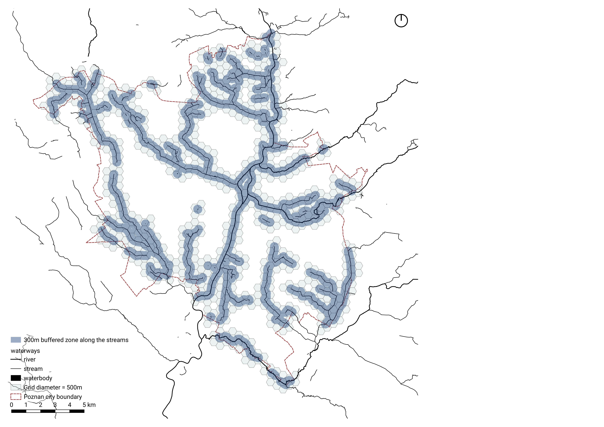

1 + 1[1] 2Group B
In this course, we explored urban stream restoration in Poznań, Poland, using two primary methodological approaches: Multi-Criteria Decision Analysis (MCDA) and Typology Construction. For each method, we identified relevant objectives and formulated research questions tailored to the respective analytical framework. In the case of MCDA, the selection of criteria and the rationale behind their inclusion will be detailed in the Methods section, while the corresponding analytical outcomes will be presented in the Results section.
Enrich Biodiversity: Which areas have a good base for implementing nature-based restoration solutions that nurture better biodiversity?
Promote Climate Adaptation: Which areas are most in need of interventions to promote climate adaptation?
Improve Quality of Life: Which areas are most suitable for neighborhood-oriented interventions that improve the quality of life of local residents?
What is the Context of Stream Restoration in Poznan?
In the Methods section, describe what are the the spatial unit (and the rationale), the indicators you choose and why, the workflow of MCDA, and later the typology construction. (from comment)

explanation texts
explanation texts

Hexagons:
- Equal distance to neighboring cells
- Reduced edge effect
Diameter = 1km:
- 15min walk distance
- Integrate stream restoration intervention into urban life in the vicinity
- Reasonable amount of cells in the city area

Buffer Zone = 500m:
- Walk-able distance for residents
- Relevant context information
Enrich Biodiversity
1-1. Healthy Vegetation Density
1-2. Natural Land Use Density
1-3. Species Richness
1-4. Nuisance from Industries
Promote Climate Adaptation
Improve Quality of Life
Enrich Biodiversity
1-1. Healthy Vegetation Density
Processing: NDVI –> Threshold > 0.2 –> Zonal Statistics –> Mean –> Normalization

1-2. Natural Land Use Density

Processing: Landuse Map–> Assigning All Green a Single Category > Join Attributes by field value–> Areas per grid assigned to each grid –> Normalization

1-3. Species Richness

Processing: Give biodiversity value –> Intersect with greed –> Area Biodiversity Value –> Add Biodiversity index from same hex –> Dissolve –> Join attributes by location

1-4. Nuisance from Industries

Processing: Landuse Map–> Sort only the industries > Join Attributes by field value–> Amount of industries assigned per grid –> Normalization
(placeholder 2-8)
1-5. Nuisance from Hard Borders

Processing: road data –> Threshold: maxspeed >= 40km/h –> Intersection and Join –> Sum –> Normalization

1-6. Historic Stream Waterway
(placeholder 2-11)
Processing:
(placeholder 2-12)
1-7. Historic Soil Type
(placeholder 2-13)
Processing:
(placeholder 2-14)
Measurements Importance Ranking:
(placeholder 2-15)
Saaty Matrix:
(placeholder 2-16)
Promote Climate Adaptation
2-1. Risk of Flooding

Processing:flooding depth map –> subtract permenant waterbody –> Zonal Statistics –> Sum –> Normalization

2-2. Density of Impermeable Surfaces

Processing:Landcover –> Zonal Statistics –> Sum –> Normalization

2-3. Water system connectivity
(placeholder 3-5)
Processing:
(placeholder 3-6)
2-4. Drought High-Risk Areas
(placeholder 3-7)
Processing:
(placeholder 3-8)
2-5. Urban Heat Island Effect
(placeholder 3-9)
Processing:
(placeholder 3-10)
2-6. Number of Hot Nights
(placeholder 3-11)
Processing:
(placeholder 3-12)
Measurements Importance Ranking:
(placeholder 3-13)
Saaty Matrix:
(placeholder 3-14)
Improve Quality of Life
3-1. Population living in the Vicinity

Processing:population data –> Zonal Statistics –> Sum –> Normalization

3-2. Urbanized Land Use Density

Processing: Landuse Map–> Assigning Broader Categories (‘residential’, ‘commercial’, ‘industrial’, ‘greens’) > Join Attributes by field value–> Sum of Areas per Landuse assigned to each grid–> Normalization
3-3. Density of Attractions for People

Processing:point of interest data –> Count Points in Polygon –> Normalization

3-4. Navigability of Stream Network
(placeholder 4-7)
Processing:
(placeholder 4-8)
3-5. Local Centrality Index

Processing:Angular Integration (500M) –> Intersection –> join value by location (Group stats) –> Mean –> Normalization

3-6. Public Transport Accessibility

Processing:public transport station data –> Count Points in Polygon –> Normalization

3-7. Angular Betweeness Index
(placeholder 4-13)
Processing:
(placeholder 4-14)
Measurements Importance Ranking:
(placeholder 4-15)
Saaty Matrix:
(placeholder 4-16)
Which areas have a good base for implementing nature-based restoration solutions that nurture better biodiversity?
(placeholder image5-1)
Which areas are most in need of interventions to promote climate adaptation?
(placeholder image5-2)
Which areas are most suitable for neighborhood-oriented interventions that improve the quality of life of local residents?

When the area has higher index, it means: (relatively)
-More people live in this area
-The area is close to existing settlement center
-The area has good public transport accessibility
-Landuse in this area allow community-oriented intervention
-Already some attractions for people are in this area